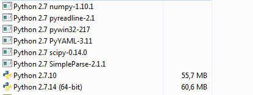

CW10: Mi 13.03.2019 14:55-------------------------------------------------------------------------------------------------------------------
Zu Installation für YAF:
pip install PyYAML argparse pathlib2 Cerberus --no-index --trusted-host frd2ahjg --find-links http://frd2ahjg/svnInsec/insecure/Dependencies/bin/yaaf_dependencies/
CW01: Mo 07.01.2019 13:45-------------------------------------------------------------------------------------------------------------------
kitchen installiert (wird in hfkt.py benutzt)
V:\setup\Windows\python\kitchen-1.2.4\setup.py install
CW51: Do 20.12.2018 16:15-------------------------------------------------------------------------------------------------------------------
Installation numpy:
python -m pip install --user numpy scipy matplotlib ipython jupyter pandas sympy nose
python -m pip install --upgrade pip
Mi 13.06.2018 14:52
Neu installation von Python, da Mix aus 32-bit und 64-bit
Installiere 32-bit Python 2.7.14 32-bit : V:\setup\Windows\python\python-2.7.14.msi
Module:
- - PyYaml: https://github.com/yaml/pyyaml
- Files: V:\setup\Windows\python\pyyaml-master
- Installieren: python setup.py install
- - Die weietern Module für Yaaf habe ich im Verzeichnis C:\Pythn27\Scripts asugeführt:
- pip install PyYAML argparse pathlib2 Cerberus --no-index --trusted-host frd2ahjg --find-links http://frd2ahjg/svnInsec/insecure/Dependencies/bin/yaaf_dependencies
- - mutagen: mp3-tagging
- Verzeichnis: V:\setup\Windows\python\mutagen-1.31
- Installation python setup.py install
- - kitchen: unicode und anderes
- Verzeichnis: V:\setup\Windows\python\kitchen-1.2.4
Installation python setup.py install
- - numpy: erster Versuch pip inll numpy im gleichen Verzeichnis, wie oben
Di 12.06.2018 14:54
bisher war installiert:


Mo 23.04.2018 14:11 Neu Installation Python 2.7.14
bisher war installiert:

Di 24.04.2018 08:04

numpy deinstalliert, die anderen prüfen und auch neu installieren